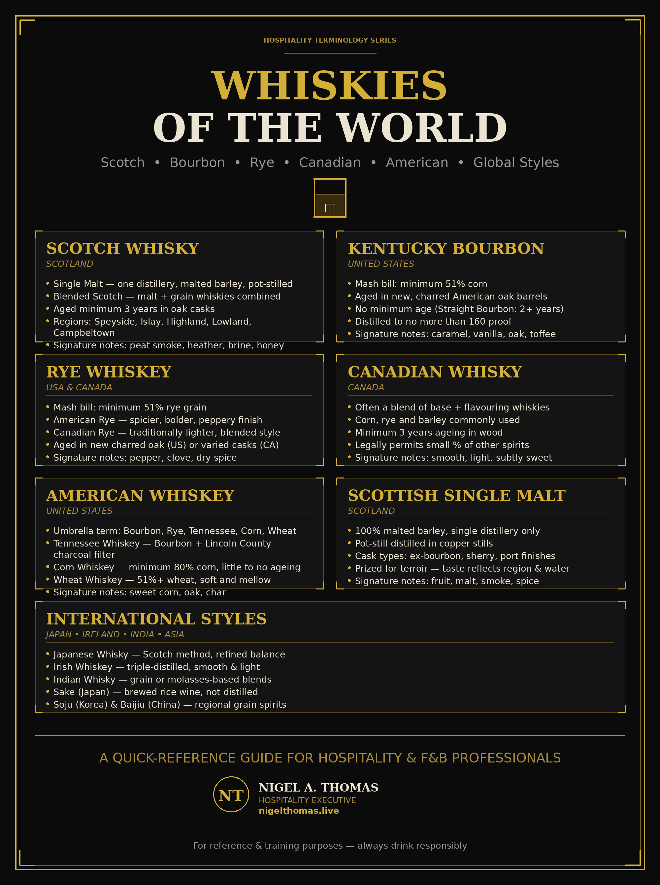

Whiskies of the World
Scotch, Kentucky Bourbon, Rye, Canadian, American, Irish, Japanese, Indian and the wider family of international grain spirits — how they are made, how they taste, and how to serve them.
Whisky is the most geographically dispersed of all the great spirits. From the misted glens of Speyside to the bluegrass hills of Kentucky, from the barley fields of Hokkaido to the sugarcane plains of India, distillers have taken the same three raw materials — grain, water and yeast — and produced a family of drinks so varied that two bottles standing side by side on the same back bar may share almost nothing but a name.
This guide is written for the working bartender, the hospitality student and the curious drinker. It covers the major whisky-producing nations, the rules that define each style, the flavour signatures you can expect, and the practical questions that come up behind the bar: what to pour, how to serve it, what to pair it with, and what to say when a guest asks for "a good whisky" and nothing else.
How to use this guide
Read it end to end for a full grounding, or jump to the style you need. At the bottom of the page you'll find the Whiskies of the World infomatic poster — a single-sheet visual summary of every style covered here — available to view and download.
What Is Whisky?
Whisky is a distilled alcoholic beverage made from a fermented mash of cereal grains. The word itself derives from the Gaelic uisge beatha — "water of life" — a translation of the Latin aqua vitae. The spelling divide is simple and worth remembering: Scotland, Canada and Japan generally use whisky (no "e"), while Ireland and the United States use whiskey (with an "e"). Neither is wrong; each is a matter of national convention and, in some cases, legal definition.
The production process is broadly consistent across the world:
- Malting — grain (usually barley) is soaked and allowed to germinate, converting starches into fermentable sugars. In Scotch production the germination is halted by drying the barley over a fire, which is where peat smoke enters the flavour.
- Mashing — the malted grain is ground and mixed with hot water to extract sugars, producing a sweet liquid called wort.
- Fermentation — yeast is added and the wort is fermented for anywhere from two to five days, producing a low-alcohol beer-like wash.
- Distillation — the wash is distilled, usually twice in Scotland and Ireland, often three times in Ireland and some Japanese houses, and typically once through a continuous column still in American whiskey.
- Maturation — the new spirit is filled into oak casks and aged. This is where the majority of flavour, colour and character develops.
- Bottling — the whisky may be chill-filtered, coloured with caramel, diluted to bottling strength, or bottled at cask strength.
Everything that follows — every regional style, every tasting note, every rule about what may and may not be called "Scotch" or "bourbon" — grows out of variations on those six steps.
Scotch Whisky
Scotch is the benchmark against which most other whiskies are measured. By law it must be produced in Scotland, made from water and malted barley (with whole grains of other cereals permitted), distilled to no more than 94.8% ABV, and matured in oak casks of no more than 700 litres for a minimum of three years. Nothing may be added except water and plain caramel colouring.
The Five Scotch Regions
| Region | Character | Typical notes |
|---|---|---|
| Speyside | Elegant, fruity, often unpeated | Apple, pear, honey, vanilla, sherry |
| Highland | Broad and varied | Heather, malt, gentle smoke, citrus |
| Lowland | Light, grassy, soft | Cut grass, cream, lemon, cereal |
| Campbeltown | Briny, oily, distinctive | Sea salt, smoke, dried fruit |
| Islay | Heavily peated, medicinal | Peat smoke, iodine, seaweed, tar |
Single Malt vs Blended
A single malt is the product of one distillery, made entirely from malted barley. A single grain comes from one distillery but may include other cereals and is usually column-distilled. A blended Scotch combines malt and grain whiskies from multiple distilleries — the category that built the global Scotch industry and still accounts for the overwhelming majority of sales worldwide.
Bar tip
When a guest asks for "a Scotch," the useful question is not which region but how much smoke. A Speyside such as Glenfiddich or Macallan sits at one end; a heavily peated Islay such as Laphroaig or Ardbeg sits at the other. Ask "smooth or smoky?" and you can place almost any palate in seconds.
Kentucky Bourbon
Bourbon is America's native whiskey and its most exported. To be called bourbon it must be:
- Made in the United States (not, despite popular belief, only in Kentucky — though Kentucky produces the overwhelming majority).
- Produced from a mash bill of at least 51% corn.
- Distilled to no more than 160 proof (80% ABV).
- Entered into new, charred oak containers at no more than 125 proof.
- Aged for at least a period with no minimum stated by law, but "straight bourbon" requires a minimum of two years.
- Bottled at no less than 80 proof.
- Free of any added colouring or flavouring.
The result is a whiskey defined by sweet, vanillin-rich oak. Expect caramel, vanilla, toasted corn, brown sugar and baking spice. The corn base gives bourbon its characteristic roundness, while the new charred barrels — used only once — give it the deep amber colour and dessert-like sweetness that make it so approachable.
Key Bourbon Sub-Styles
| Style | What it means |
|---|---|
| Straight bourbon | Aged at least two years, no added colour or flavour |
| Bottled-in-bond | At least four years old, 100 proof, one distillery, one season |
| Small batch | A blend of a limited number of barrels (no legal definition) |
| Single barrel | Bottled from one barrel, so each release varies |
| Wheated bourbon | Wheat replaces rye in the mash bill — softer, sweeter |
| High-rye bourbon | Higher rye content — spicier, more peppery |
Rye Whiskey
Rye is the older American style and, for many drinkers, the more interesting one. It must be made from a mash bill of at least 51% rye, and follows the same new-charred-oak rules as bourbon. Where bourbon is round and sweet, rye is lean, spicy and herbal — think black pepper, caraway, dill, mint and a dry, grassy finish.
Rye was the dominant American whiskey before Prohibition and has returned to prominence largely through the cocktail revival: it is the backbone of the Manhattan, the Old Fashioned, the Sazerac and the Boulevardier. Its spice cuts through vermouth and bitters in a way bourbon's sweetness cannot.
Canadian whisky is sometimes called "rye" colloquially, but the two are distinct. Canadian rye is typically a blend where rye may be only a flavouring component.
Canadian Whisky
Canadian whisky is defined by blending and by a lighter, smoother house style. By law it must be mashed, distilled and aged in Canada for at least three years in wooden barrels of no more than 700 litres. It is typically a blend of a base whisky (often corn) with a flavouring whisky (often rye), married together before bottling.
The result is generally softer and more approachable than bourbon — vanilla, toffee, light spice, a clean grain finish. Brands such as Crown Royal, Canadian Club and Forty Creek define the category. Canadian whisky is an excellent introductory pour and works well in highballs and lighter mixed drinks.
American Whiskey Beyond Bourbon
The United States produces a wider range of whiskey than most drinkers realise. Beyond bourbon and rye:
| Style | Base | Notes |
|---|---|---|
| Tennessee whiskey | Corn (bourbon-style mash) | Filtered through maple charcoal before ageing — smoother, slightly smoky |
| Wheat whiskey | At least 51% wheat | Soft, bready, gentle |
| Corn whiskey | At least 80% corn | Often unaged or lightly aged; sweet and raw |
| Malt whiskey | At least 51% malted barley | American take on single malt |
| Blended American | Whiskey plus neutral spirit | Lighter, used in high-volume mixing |
Irish Whiskey
Irish whiskey is the smooth, approachable cousin of Scotch. It must be produced in Ireland (including Northern Ireland) and aged in wooden casks for at least three years. The defining technical difference is that Irish whiskey is almost always triple distilled, which strips out heavier compounds and produces a lighter, cleaner spirit.
Irish whiskey is also unusual in that it permits a wider range of grains and does not require the peat smoke that characterises much of Scotch. The classic styles are:
- Single malt — 100% malted barley from one distillery.
- Single pot still — a mix of malted and unmalted barley, distilled in a pot still; the signature Irish style, spicy and creamy.
- Single grain — typically column-distilled from corn or wheat.
- Blended — a combination of the above; the most common category worldwide.
Expect soft vanilla, green apple, honey, light spice and a clean, gentle finish. Jameson, Bushmills, Redbreast and Tullamore D.E.W. are the names most guests will recognise.
Japanese Whisky
Japanese whisky began as a deliberate imitation of Scotch and has become one of the most sought-after styles in the world. It was founded in the 1920s by Masataka Taketsuru, who studied chemistry in Scotland and brought the techniques home. The two founding houses — Suntory and Nikka — still dominate.
Japanese whisky is not defined by a single flavour but by precision. Distilleries such as Yamazaki, Hakushu, Yoichi and Miyagikyo produce whiskies that range from delicate and floral to heavily peated, often with a characteristic refinement and balance. The style tends toward elegance rather than power: subtle smoke, orchard fruit, mizunara oak spice and a long, clean finish.
Note on labelling
Japanese whisky labelling has historically been loose, and some bottles sold as "Japanese" contain imported spirit. New labelling standards introduced in 2021 tightened the rules, but older stock may still be on shelves. If authenticity matters to a guest, check the bottle for a Japanese distillery name and a stated ageing period.
Indian Whisky
India is the largest whisky market in the world by volume, though much of what is sold domestically is technically a blend of molasses-based spirit with a small proportion of malt whisky — a category sometimes called "Indian-made foreign liquor" (IMFL). This is changing fast.
A new generation of Indian single malts has won international acclaim. Amrut, founded in Bangalore, was the first Indian single malt to gain global attention. Paul John (Goa) and Indri (Haryana) have followed, producing whiskies that mature far faster than their Scottish equivalents because of India's heat — often reaching full maturity in three to five years. The flavour profile is typically rich, tropical and intense: mango, banana, dark chocolate, spice and a warm, oily texture.
International Styles: Sake, Soju, Baijiu and Beyond
Whisky does not exist in isolation. On a well-stocked international back bar it sits alongside other grain- and rice-based spirits that share its production logic and its place at the table.
Sake (Japan)
Sake is not a spirit but a brewed rice beverage, often called "rice wine." It is made from rice, water, yeast and koji mould, and ranges from crisp and dry (junmai, ginjo) to sweet and rich. While not a whisky, it belongs in any serious discussion of international grain beverages and is increasingly served alongside whisky in Japanese-style bars.
Soju (Korea)
Soju is a clear Korean spirit, traditionally distilled from rice but now most commonly made from sweet potato, wheat or tapioca. It is typically 16–25% ABV, neutral and clean, and is the world's best-selling spirit by volume. It is a staple of Korean dining and pairs naturally with grilled meats and spicy dishes.
Baijiu (China)
Baijiu is the world's most consumed spirit, though almost entirely within China. It is distilled from sorghum (sometimes with other grains) and is famous for its pungent, intensely savoury character — descriptors range from soy sauce and mushrooms to tropical fruit and anise. It is an acquired taste for many Western drinkers but is essential to understanding global spirits.
Other Grain and Rice Spirits
- Shochu (Japan) — a distilled spirit, usually from sweet potato, barley or rice; lighter than whisky, often 25% ABV.
- Awamori (Okinawa) — a rice spirit distilled in Okinawa, aged in clay pots.
- Rakı (Turkey) — an aniseed-flavoured spirit, usually from grapes but with a grain-distilled cousin.
- Poitín (Ireland) — a traditional Irish distilled spirit, historically illicit, now regulated.
How to Taste Whisky
Professional tasting follows a simple discipline. It is not about ceremony; it is about attention.
- Look. Note the colour. Deeper amber suggests longer or more active oak ageing. Pale gold suggests a lighter cask influence or a younger spirit. Colour is not a quality indicator on its own, and in Scotland caramel colouring is legal.
- Nose. Add a small amount of water first if the spirit is above 50% ABV. Swirl gently and smell with your mouth slightly open. Try to identify three things: the grain, the cask and the environment (smoke, salt, earth).
- Taste. Take a small sip and let it coat the tongue. Note the arrival, the mid-palate and the finish separately. Add a drop of water and taste again — the flavour will change, often opening up.
- Finish. How long does the flavour last? A long, complex finish is one of the clearest signs of a well-made spirit.
The water question
A few drops of room-temperature water — not ice, not soda — can transform a cask-strength whisky. Water breaks the surface tension of the alcohol and releases volatile aroma compounds. For a 40% ABV whisky, water is usually unnecessary. For anything above 50%, it is often essential.
Serving Whisky Behind the Bar
| Serve | Glass | Best for |
|---|---|---|
| Neat | Tasting glass / copita | High-quality single malts, cask strength |
| With water | Tasting glass | Anything above 50% ABV |
| On the rocks | Old Fashioned / tumbler | Bourbon, rye, blended Scotch |
| Highball | Highball / Collins | Japanese whisky, Canadian, blended Scotch |
| Cocktail | Varies | Rye in Manhattans, bourbon in Old Fashioneds |
Ice is a legitimate choice, but it is not neutral. Cold suppresses aroma and dilution changes the drink over time. A large, clear cube melts slowly and is preferable to crushed ice in a whisky glass. For a highball, use plenty of ice and top with chilled soda water — the drink should be cold, fizzy and refreshing, not watery.
Food Pairing
Whisky pairs well with food, but the pairing must respect the spirit's power. The general rule is: match intensity, and let the smoke, sweetness or spice find a partner.
| Whisky style | Food pairing |
|---|---|
| Speyside / Lowland Scotch | Smoked salmon, mild cheese, apple tart |
| Islay / peated Scotch | Oysters, blue cheese, dark chocolate, smoked meats |
| Kentucky Bourbon | Pulled pork, pecan pie, aged cheddar, barbecue |
| Rye | Pastrami, rye bread, pickles, charcuterie |
| Canadian | Maple-glazed salmon, mild curry, light desserts |
| Irish | Irish stew, soda bread, creamy cheeses |
| Japanese | Sushi, sashimi, grilled yakitori, matcha desserts |
| Indian single malt | Tandoori, biryani, spiced chocolate |
Buyer's Guide: What to Stock
A well-balanced whisky shelf does not need to be large. It needs to cover the major flavour territories so that any guest can be served well.
Essential bottles
- A Speyside single malt — the smooth, approachable anchor (e.g. Glenfiddich 12, Macallan 12).
- An Islay single malt — for the smoke seekers (e.g. Laphroaig 10, Ardbeg 10).
- A Kentucky bourbon — the sweet, oak-driven workhorse (e.g. Buffalo Trace, Maker's Mark).
- A rye — for cocktails and spice (e.g. Rittenhouse, Bulleit Rye).
- A Canadian — the light, easy pour (e.g. Crown Royal, Canadian Club).
- An Irish — the smooth, triple-distilled option (e.g. Jameson, Bushmills).
Nice to have
- A Japanese single malt or blend for the curious guest.
- A cask-strength bottling for the enthusiast.
- A high-rye or wheated bourbon to show range within the American category.
- An Indian single malt as a conversation piece.
What to avoid
- Buying only on age statements — age is not quality, and NAS (no age statement) whiskies can be excellent.
- Over-investing in rare bottles that will never be opened.
- Ignoring your guests' actual requests in favour of what you personally like.
Common Questions
Is Scotch always smoky?
No. Most Speyside and Lowland whiskies are unpeated or very lightly peated. Heavily smoky whisky is largely an Islay and island tradition.
What is the difference between whisky and whiskey?
Spelling convention. Scotland, Canada and Japan use whisky; Ireland and the United States use whiskey. The drink is the same family either way.
Does older mean better?
Not necessarily. Age adds complexity and oak influence, but it can also overpower a delicate spirit. Many excellent whiskies are bottled young, and many over-oaked ones are bottled old.
Should I add water?
If the whisky is above 50% ABV, a few drops usually help. Below 40%, it is a matter of taste.
What is the best whisky for a beginner?
A Speyside single malt, an Irish blend or a Canadian whisky. All are smooth, approachable and low in smoke.
The Global Picture
Whisky today is a genuinely global drink. Scotland remains the reference point, but the most exciting developments are happening elsewhere: Japanese distilleries pushing precision to new levels, Indian single malts rewriting the rules on maturation, American craft distillers reviving rye and experimenting with heritage grains, and new producers emerging across Europe, Australia, Taiwan and beyond.
For the bartender, this is an opportunity. The guest who once asked only for "a Scotch" now has a genuine world of styles to explore, and the professional who can guide that exploration — who knows the difference between a Speyside and a Highland, who can explain why bourbon tastes sweet and rye tastes spicy, who can pour a Japanese highball with confidence — is worth their weight behind the bar.
Use the poster below as a quick reference. Keep it behind the bar, print it for staff training, or share it with guests who want to learn. The world of whisky is large, but it is not intimidating once you understand the map.

Whiskies of the World — a single-sheet reference covering every style in this guide.
{kind=link}